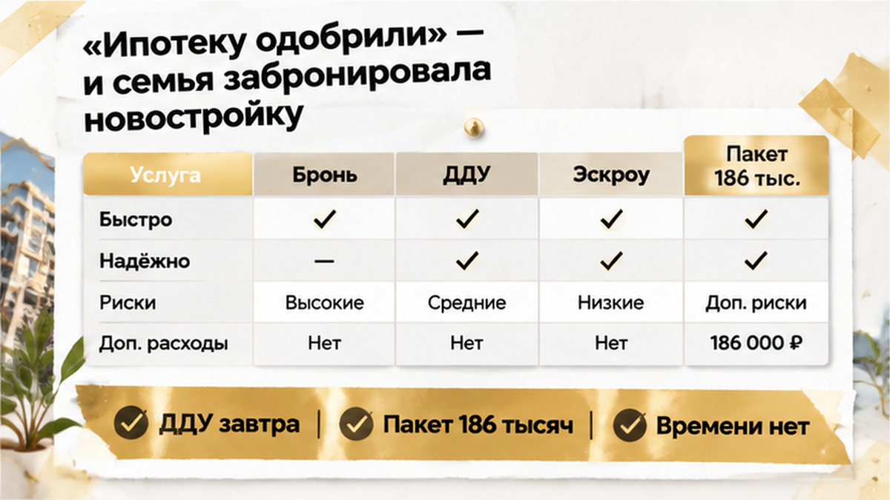

За сутки до подписания ДДУ в Тюмени у семьи всплыла страховка на 186 тысяч рублей — эскроу не открыли, а бронь квартиры через 48 часов сгорела. Ипотеку банк уже одобрил, объект выбрали, первоначальный взнос и ежемесячный платёж посчитали. Но вечером менеджер прислал допсоглашение, которого не было в исходном расчёте. До визита в банк оставался один день, и покупателям пришлось решать: срочно искать ещё 186 тысяч или остановить сделку.
Я, Святослав Шакин, разбираю такие истории в The Риэлтор — о новостройках и сделках в Тюмени без лишней паники.
Начиналось всё как обычная ипотечная сделка. Семья выбрала квартиру в новостройке, получила одобрение банка и внесла плату за бронь. В расчёте были первоначальный взнос, ежемесячный платёж и сумма, которая должна была уйти на эскроу после подписания ДДУ.
Отдельной строки на страховой пакет там не было.
И вот здесь обычный покупатель часто ставит знак равенства: «Ипотеку одобрили — значит, все расходы уже известны». На практике одобрение подтверждает кредитную конструкцию в тех данных, которые банк видел на момент принятия решения. Оно не означает, что любой новый платёж от офиса продаж автоматически стал обязательной частью кредита.
Страхование жизни и здоровья заёмщика само по себе не является обязательным по закону. Но кредитный договор может предусматривать повышение ставки при отказе от такого полиса. Это нужно проверять не по словам менеджера, а по письменным условиям банка.
С имущественным страхованием тоже нельзя действовать на автомате. При покупке квартиры по ДДУ обязанность обычно связана с возникновением права собственности и конкретными условиями залога. Нельзя просто увидеть в сообщении партнёра застройщика «страхование имущества» и решить, что оформить его именно сейчас, у указанной компании и на предложенную сумму требует банк.
Профессиональная проверка начинается с трёх документов: кредитного договора или его проекта, условий бронирования и расчёта сделки. К ним нужно добавить письменный ответ банка: нужен ли конкретный полис, что изменится при отказе и можно ли выбрать другую страховую компанию.
В этой семье такой проверки до брони не было. Решение о квартире приняли на основании одного расчёта, а существенная дополнительная сумма появилась позже. Похожая точка риска возникает и в других сделках, когда кредит уже одобрен, но эскроу ещё не открыт. В разборе семейной ипотеки на новостройку важной оказалась именно цепочка действий до открытия счёта, а не сама формулировка «кредит одобрен».
ДДУ и открытие эскроу назначили на следующий день. Вечером, уже перед поездкой в банк, покупатели получили от менеджера новый документ. В нём предлагали оформить у партнёра застройщика обязательный, как было сформулировано в переписке, пакет страхования жизни и имущества стоимостью 186 000 ₽.
Для семьи это был не технический пункт, а новый входной платёж, который требовалось найти до подписания документов. В первоначальном расчёте его не было. Из сообщения также не следовало, что банк письменно потребовал именно такой пакет, у конкретной страховой компании и за указанную сумму.
Покупатели сопоставили допсоглашение с тем, что уже подписали и оплатили. Бронь была внесена, ипотека одобрена, параметры платежа известны. Но теперь сумма на входе выросла, а решение о покупке пришлось принимать в условиях дефицита времени.
Сутки до ДДУ — это не тот момент, когда стоит подписывать любой новый файл со словами «иначе квартира уйдёт». Сначала нужно запросить кредитный договор с условиями страхования, письменное разъяснение банка о последствиях отказа и полный состав пакета.
Если полис добровольный, отдельно проверяются срок действия, страховая сумма, перечень рисков, периодичность оплаты и возможность выбрать другую компанию. Если он влияет на ставку, в расчёте должны появиться оба варианта: с полисом и без него. Тогда покупатель видит не только цену страховки, но и настоящую стоимость кредита.
Это другая ситуация, чем изменение параметров самой ипотеки. В разборе со ставкой, которую банк поднял накануне ДДУ, главным вопросом была стоимость кредита. Здесь неожиданно появился отдельный страховой пакет между бронью и подписанием договора.
Обычный покупатель в такой момент думает: «Раз менеджер прислал документ, значит, это обязательное условие». Профи задаёт другой вопрос: «Кто именно требует этот платёж — банк, договор или офис продаж?» Пока на него нет письменного ответа, новая сумма остаётся неподтверждённым расходом, а не частью согласованного расчёта.
